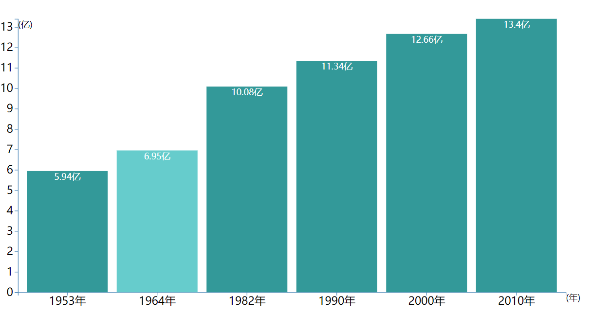
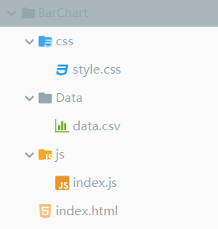

原文出处:本文由博客园博主feiquan提供。
原文连接:https://www.cnblogs.com/feiquan/p/10759499.html
原文连接:https://www.cnblogs.com/feiquan/p/10759499.html
效果图：
条形图：

目录结构：



<!DOCTYPE html>
<html lang="en">
<head>
<meta charset="UTF-8">
<link href="css/style.css" media="screen" rel="stylesheet" type="text/css"/>
<title>Linechart1</title>
</head>
<body>
<div id="container"></div>
<script src="https://d3js.org/d3.v5.min.js"></script>
<script src="js/index.js"></script>
</body>
</html>svg rect{
fill:#339999;
}
svg rect:hover {
cursor: pointer;
fill: #66cccc;
}year,population
1953,5.94
1964,6.95
1982,10.08
1990,11.34
2000,12.66
2010,13.40/垂直Bar，加刻度
d3.csv("Data/data.csv",function (d) {
return {
// year: new Date(+d.year, 0, 1), // convert "Year" column to Date
year: d.year+"年",
population: +d.population // convert "population" column to number
};
}).then(function (data) {
console.log(data);
var //data=[1,8,5,6,8,9,3,5,2,20],
width=1000,
height=500,
margin={left:30,top:30,right:30,bottom:30},
svg_width=width+margin.left+margin.right,
svg_height=height+margin.top+margin.bottom;
//离散缩放 population=>[0,width]
var scale_x=d3.scaleBand()
.domain(data.map(function (d) {
return d.year;
}))
.range([0,width])
.padding(0.1);
//线性缩放
var scale_y=d3.scaleLinear()
.domain([0,d3.max(data,function (d) {
return d.population;
})])
.range([height,0])
var svg=d3.select("#container")
.append("svg")
.attr("width",svg_width)
.attr("height",svg_height)
var chart=svg.append("g")
.attr("transform","translate("+margin.left+","+margin.top+")");
var x_axis_color="steelblue",
y_axis_color="steelblue";
var x_axis=chart.append('g')
.call(d3.axisBottom(scale_x))
.attr("transform","translate(0,"+height+")");
x_axis.selectAll("path")
.attr("stroke",x_axis_color)
x_axis.selectAll("line")
.attr("stroke",x_axis_color)
x_axis.selectAll("text")
.attr("font-size",'2em')
var y_axis=chart.append('g')
.call(d3.axisLeft(scale_y));
y_axis.selectAll("path")
.attr("stroke",y_axis_color)
y_axis.selectAll("line")
.attr("stroke",y_axis_color)
y_axis.selectAll("text")
.attr("font-size",'2em')
//Y轴注解
chart.append("text")
.text("(亿)")
// .attr("text-anchor","end")
// .attr("transform","rotate(-90)")
.attr("dy","1em")
//X轴注解
chart.append("text")
.text("(年)")
// .attr("text-anchor","end")
.attr("transform","translate("+width+","+height+")")
.attr("dy","1em")
var bar=chart.selectAll(".bar")
.data(data)
.enter()
.append("g")
.attr("transform",function (d,i) {
return "translate("+scale_x(d.year)+",0)"
})
bar.append("rect")
.attr("y",function (d) {
return scale_y(d.population);
})
.attr("height",function (d) {
return height-scale_y(d.population);
})
.attr("width",scale_x.bandwidth() )
.attr("class",".rect")
bar.append("text")
.text(function (d) {
return d.population+"亿";
})
.attr("y",function (d) {
return scale_y(d.population);
})
.attr("x",scale_x.bandwidth() /2)
.attr("dy","1em")
.style("text-anchor","middle")
.style("fill","white")
})参考教程：https://www.imooc.com/learn/103